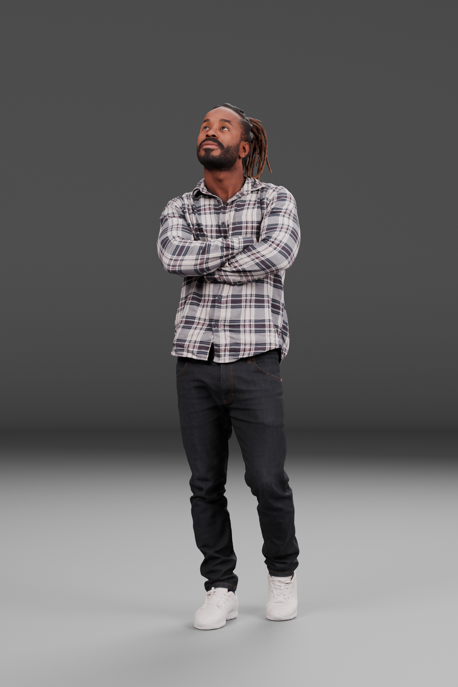
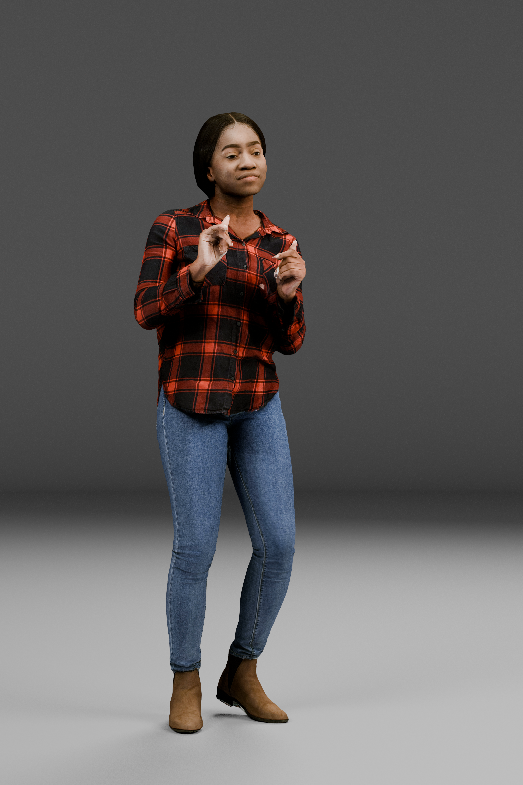

A
STATIC SCAN
Posed People Plus


300,066 triangles · 8K mapsOriginal PNG
A BLENDER STUDIO COMPARISON
A detailed posed scan and a captured 4D performance.
The same neutral studio, two ways to see the source.
PARTIAL STUDY Different individuals · 25 October 2026
STATIC SCAN

VOLUMETRIC CAPTURE

Full-body studio renders · 2048 × 3072 px · Select either image to enlarge.
02 / SEE THE PERFORMANCE
The geometry changes. The texture changes with it. This is a short excerpt of the genuine volumetric capture, rendered from its original mesh and image sequence.
The complete capture is preserved in the private Blender project. This silent preview samples every third source frame; no motion interpolation is added.
03 / READ THE EVIDENCE
Direct Cycles renders from tested Blender projects. Original appearance and scan limitations stay visible.
Neutral lighting, 85 mm cameras, exposure 0, and AgX Base Contrast. Full-body and face renders use 64 CPU samples. Depth of field, motion blur, and denoising are off.
Posed Plus keeps its 300K mesh and original 8192 × 8192 maps. The 4D capture keeps changing topology and UVs with a 4096 × 4096 diffuse texture per frame.
Posed Plus shows stronger facial detail. The 4D face is softer and includes captured texture grain and baked lighting. Neither scan has generated facial detail or restoration.
Stature: both projects target an estimated 1.70 m barefoot upright height. Footwear, hair, and bent poses prevent exact measurement. Indicative uncertainty is ±6 cm for Posed Plus and ±8 cm for 4D. One uniform root scale stays constant throughout the capture.
Output: full body 2048 × 3072; face 2048 × 2048; three-quarter and profile 768 × 1152. Render dimensions do not add detail to the original source textures. The 384 × 576 playback preview is rendered at 16 samples.
Validation: saved projects were reopened in fresh Blender 4.5.15 LTS processes and retested after ZIP extraction. All dependencies were present. Geometry, UVs, and actual texture advancement were checked at frames 1, 279, 557, 835, and 1112. All 1,117 active source images were preserved byte for byte.
Capture limitations: native poses, clothing, and hair are retained. The posed scan has no body or face rig. The 4D source has diffuse-only captured imagery and small foot-contact jitter; it is not fully relightable PBR.